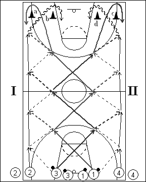

Catégorie : PASSES (Pas-011)
Déroulement
- Quatre files de joueurs à une baseline. Les ballons sont dans les deux files du milieu.
- Le premier joueur de la file 3 passe au premier joueur de la file 2 pendant que le premier joueur de la file 1 passe au premier de la file 4. 1 et 3 croisent. 1 reçoit le ballon de 2 et lui remet, tandis que 3 reçoit le ballon de 4 et lui remet. Les deux joueurs de milieu croisent à nouveau et on retrouve la situation de départ. A la fin de la traversée, 1 passe derrière le cône a et revient dans le couloir latéral tout comme 3 passe derrière le cône c et revient également le long de la ligne latérale. 2 revient dans le centre en dribblant autour du cône b, tandis que 4 dribble derrière le cône d. Au retour, on a donc 1 en 2, 2 en 3, 3 en 4 et 4 en 1. On effectue deux aller-retour.
- La vague de quatre suivante part alors.
Coaching points
- On peut aussi demander un lay-up du côté I et un jump-shoot du côté II; dans ce cas, sur deux aller-retour, chaque joueur fait donc un lay-up et un jump shoot.